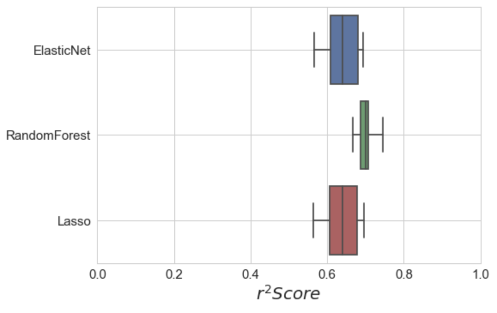
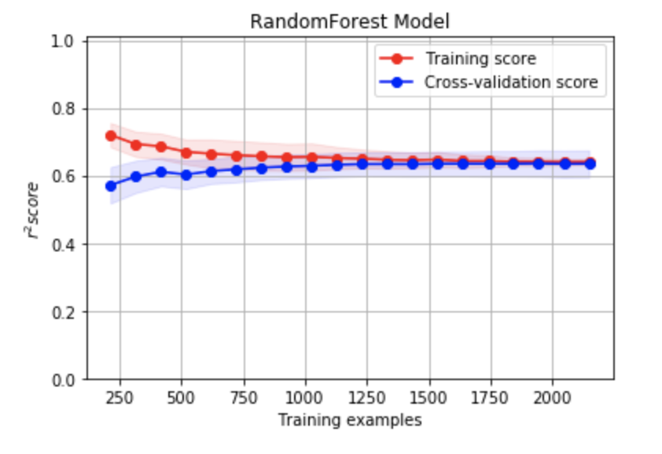
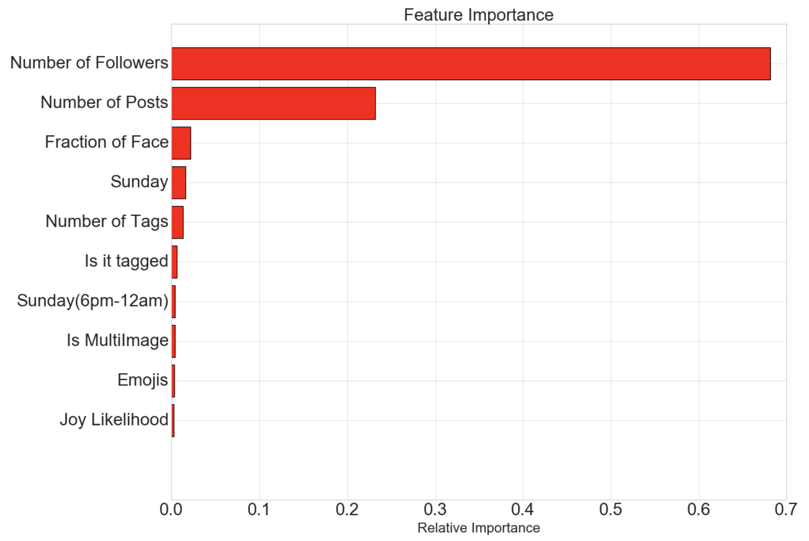

Social media marketing is a growing space. Brand and digital marketers pay Instagram influencers to post products on their profiles to reach certain audiences. In this post, I will first address what data is publicly available for Instagram profiles. Then, explore the data for any valuable insights towards how to construct our model. Next, I construct a feature list and build a regression model to predict the number of likes for an influencers subsequent posts. Finally I conclude with future extensions and next obvious steps.
This project was conceived, executed, and completed within 3 weeks at Insight Data Science NYC using tools such as , Python, BeautifulSoup, Sklearn, tensorflow im2text, Google Cloud Vision, Word2Vec, matplotlib, and seaborn.
The code and documentation lives on my Git repository.
https://github.com/1grossora/Insight_Predictogram
An Instagram influencer is a user who's posts reach a large amount of other users. Top Instagram influencers can demand large compensation for an advertisement or product brand to be posted on their profile. For this study, the number of 'likes' will be what we use to quantify the reach of a post.
Goal: Predict the number of likes for an Instagram post for a specific influencer.
To address this we will need to produce models that are user specific to help capture the unique personality of an individual influencer. Building a model that takes a large group of influencers and averages their profiles together will not provide models that are specific to a given individual. The drawbacks of a user specific approach limit us to dealing with smaller datasets and scope the available model choices.
The framework, explained in a later section, is scalable to any Instagram user that has regular posts on Instagram. Users that do not have frequent post or are inactive can not be modeled easily. More information can be found in the Github README. To understand the framework and model pipeline, the majority of this post we will focus on one particular Instagram influencer.
Chiara Ferragni is an Italian business woman and influencer who collaborates with some of the major fashion and beauty brands such as Dior, Chanel, Louis Vuitton, Pantene and many more.
Available data was scraped from public profiles using the Instagram API which provided information about post and user metadata, images, texts. Historical user data is not available through the API. Instead, historical data about number of followers was found from another source , SocialBlade.com. This website maintains a database of various user profiles and tracks their number of followers over a certain time. For this analysis all the possible data was scraped with the intention of providing the ability for future models to become more complex.
The first step in any data analysis is to explore the data. Upon looking at a few profiles it was quickly evident that the data drastically changed it's behavior around spring of 2016. After a little searching around the internet, I found that Instagram implemented a SmartFeed algorithm that was rolled out between April and June 2016.
Building a model to account for the pre-smartfeed data isn't really that practical and therefor only the post-smartfeed data was used in building the model.
There is a wealth of data that could be used to build complex models with many features. Being that we now have a smaller data set, feature engineering becomes very important.
The features are divided into three main category types, metadata, Text, and image. In total there are 82 features that go into the model described in this blog. Some features include:
There were 3 models I chose to explore, Lasso , Elastic Net, and Random Forest. The first model, Lasso Regression, implements L1 regularization and is capable of parameter shrinkage and variable selection automatically. The second, Elastic Net, implements a linear combination of L1 and L2 regularization and is used when there are several highly correlated variables. Finally, a random forest model was tried given the features and parameter space.

A grid search(although computationally intensive) was used to optimize the hyper parameters for each mode. The radom forest was chose and returned an r2 score 0.71 for model prediction vs true. Each model used 10 fold cross validation to avoid over training. The learning curves and r2 score is shown below.

Upon looking at various features I found that there is a large importance on the number of followers and number of posts. Other features, such as fraction of face size to the image, posting on a Sunday, and number of tags, seem intuitive but can vary user to user.

Social media has a wealth of data from public influencers. Adding extra model features from image and text data add limited enhancement to the model. The driving factor for the model prediction for this case was having a large number of followers. One future step could be to more deeply leverage deeper features in the image data. Two approaches come to mind. First, one could take a pre trained CNN, such as Inception V3 and use it to categorize what items are in the image, then cluster frequent images. Deep Convolution Neural Networks can identify what is in a photo and then use that as a feature in a regression model. The second, which is more robust, would be to remove the last fully connected layer of the network and feed the nodes directly into a regression model. Due to limited resources and time neither implementation was feasible and is left for a future extension for this study.